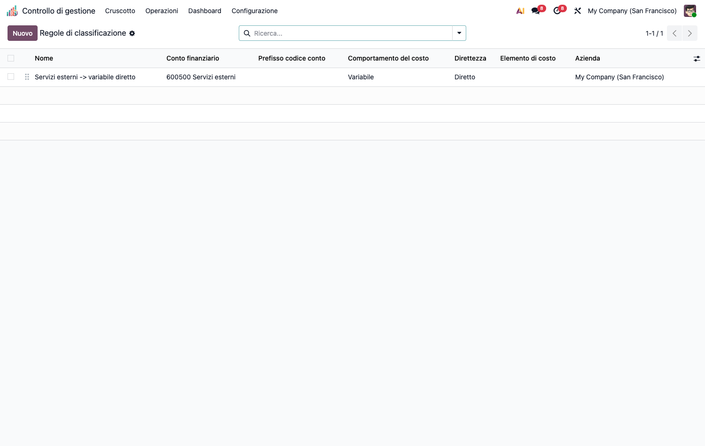

<section class="oe_container">
<div class="oe_row oe_spaced">
<div class="oe_span12">
<h1>CMC – Integrazione Contabile (cmc_account)</h1>
<p>Modulo <strong>ponte</strong> della suite CMC. Dipende da <code>cmc_base</code> e <code>account</code>.</p>
<h2>Obiettivo</h2>
<p>Alimentare il controllo di gestione con i <strong>dati reali della contabilità</strong>: le righe analitiche generate dalla co.ge. vengono <strong>classificate automaticamente</strong> secondo la tassonomia CMC (comportamento, diretto/indiretto, elemento di costo), così da entrare nella base di costo senza doppia imputazione.</p>
<p></p>
<h2>Configurazione (step-by-step)</h2>
<p>La classificazione automatica di ogni riga analitica combina <strong>due strati</strong> (non sono alternative: lavorano insieme sulla stessa riga).</p>
<ol><li>Installa <code>cmc_account</code> (richiede <code>cmc_base</code> + <code>account</code>).</li></ol>
<ol><li><strong>Strato 1 — Mappatura conto → elemento</strong> (assegna <em>solo l&#x27;elemento di costo</em>). Apri un conto (<em>Contabilità › Configurazione › Piano dei conti</em>) e valorizza <strong>Elemento di costo CMC</strong>. È la scorciatoia &quot;questo conto è <strong>sempre</strong> questa natura di costo&quot; (es. conto</li></ol>
<p><em>600100 Materie prime</em> → elemento <em>MP</em>). La mappatura <strong>non</strong> dice se il costo è fisso/variabile o diretto/indiretto: solo la natura.</p>
<ol><li><strong>Strato 2 — Regole di classificazione</strong> (assegnano <em>il resto</em>: comportamento e diretto/indiretto, più l&#x27;elemento come <strong>ripiego</strong>). <em>Controllo di gestione › Configurazione › Integrazione contabile › Regole di classificazione</em> → <strong>Nuovo</strong>.</li></ol>
<ul><li><strong>Match</strong> (lascia vuoto = qualsiasi): conto, prefisso codice conto, categoria prodotto, partner, centro.</li><li><strong>Assegna</strong> (solo fill): comportamento (fisso/variabile), diretto/indiretto, e — solo se lo Strato 1 non ha già dato l&#x27;elemento — l&#x27;elemento di costo.</li><li>L&#x27;ordine (<strong>sequence</strong>) determina la priorità: la prima regola che combacia vince.</li></ul>
<p><strong>Come si combinano su una riga</strong>: prima la mappatura del conto fissa l&#x27;elemento; poi la prima regola che combacia aggiunge comportamento e diretto/indiretto. Se il conto era muto sull&#x27;elemento, ci pensa la regola. Perciò tipicamente usi la <strong>mappatura</strong> per la natura del costo (stabile, per conto) e le <strong>regole</strong> per comportamento e direttezza (dipendono dal contesto: centro, partner, categoria prodotto). Regola <em>fill-only</em>: non sovrascrive mai un valore già presente.</p>
<h2>Utilizzo (step-by-step)</h2>
<ol><li>Registra normalmente in contabilità con conto analitico: alla creazione della riga analitica scatta l&#x27;<strong>auto-classificazione</strong> (<code>_cmc_auto_classify</code>) secondo le regole.</li><li><strong>Verifica gli scoperti</strong>: <em>Rilevazione costi › Qualità dei dati › Righe di costo non classificate</em> elenca le righe non ancora classificate — aggiungi/riordina le regole finché la lista si svuota.</li><li>Le righe classificate confluiscono automaticamente nella base di costo di <code>cmc_base</code> (registrazione costi, ribaltamento, quadro analisi).</li></ol>
<h2>Note</h2>
<ul><li>La classificazione manuale (<code>cmc_classified_manually</code>) ha la precedenza e non viene sovrascritta dalle regole.</li><li>Base per i ponti operativi <code>cmc_hr_timesheet</code> (manodopera da timesheet) e <code>cmc_mrp</code> (costo primo da produzione), che ne estendono l&#x27;auto-classificazione.</li></ul>
</div>
</div>
</section>
